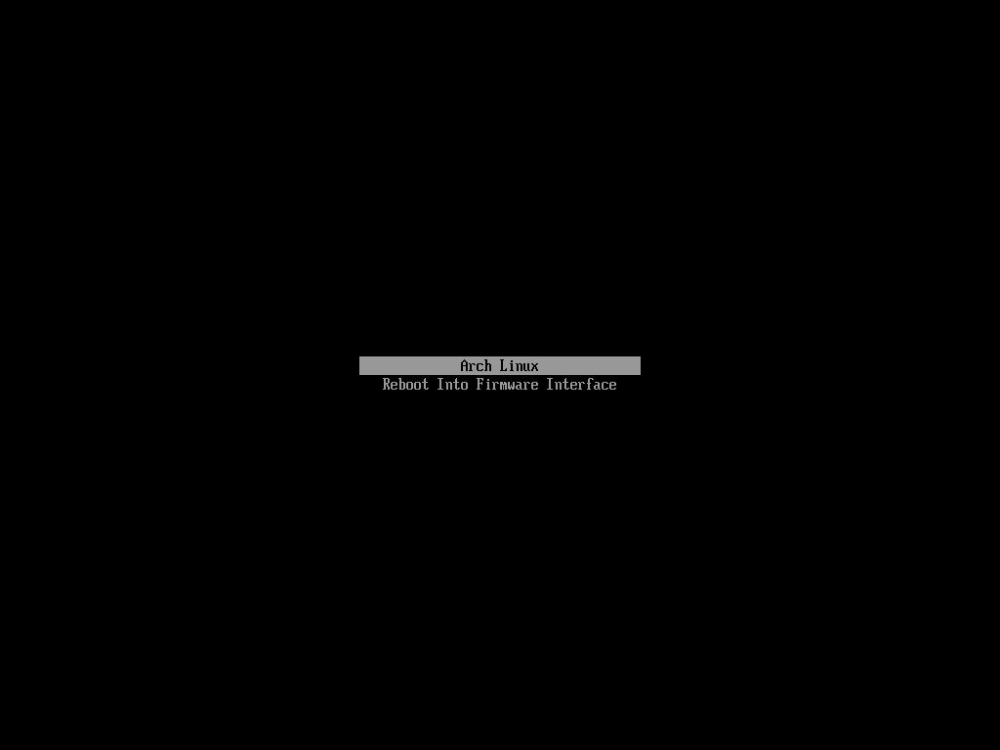
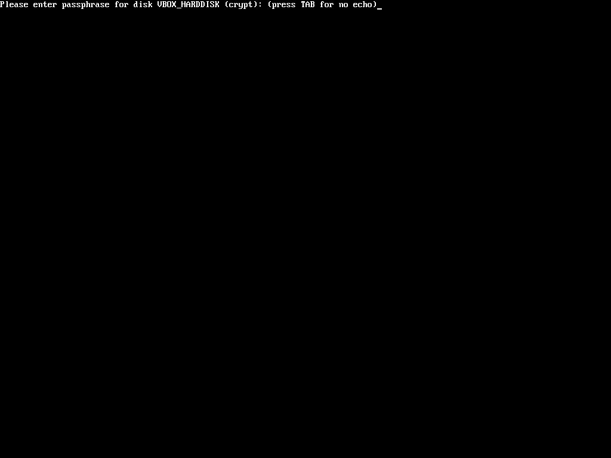
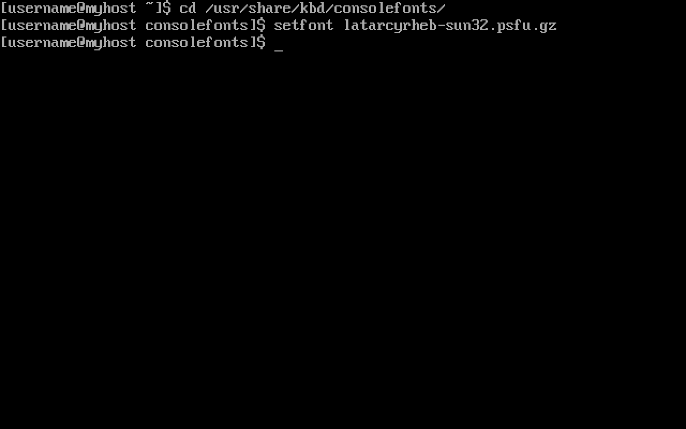
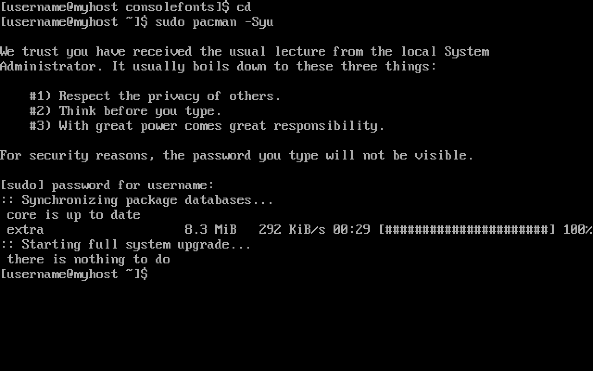
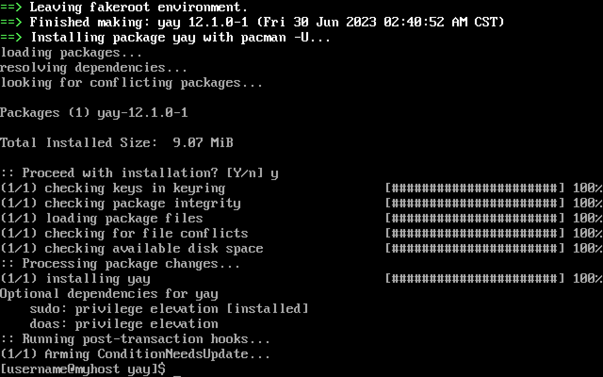
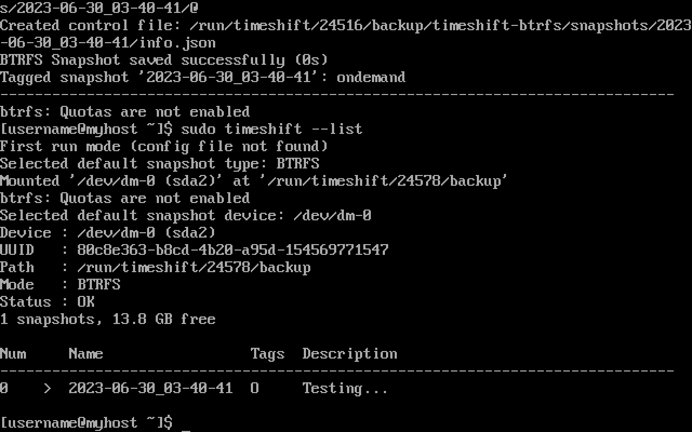
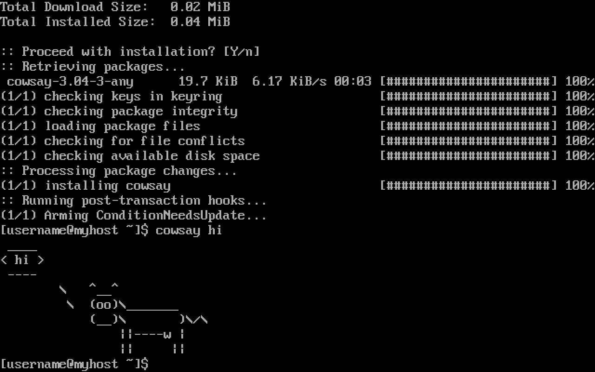
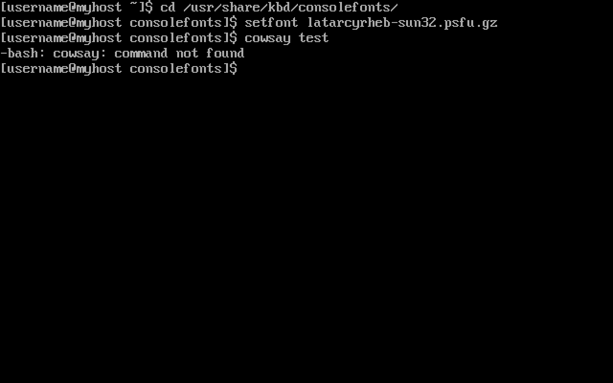

Post-Installation
Once booted, the bootloader is displayed (if everything was done correctly).

The password created before is requested before getting into the system.

A larger font is selected.

AUR
The Arch User Repository (AUR) is a community-driven
repository for Arch users. It contains package descriptions (PKGBUILDs) that allows users to compile a package
from source with makepkg and then install it via pacman. Every AUR package can be found here
This is why installing base-devel is important if using the AUR is planned.
Pacman is a package manager that is considered a huge advantage of Arch Linux and one of its major distinguishing features. It combines a simple binary package format with an easy-to-use build system. All packages offered by pacman are found in the package search section.
With the purpose of having an up-to-date system, the repository databases are synchronized, and the packages are updated with:

For convenience, an Arch User Repository helper is installed. These automate the usage of the AUR. Tasks such as package search, resolving of dependencies, retrieving and building, and others are automated. This guide uses yay, although virtually any other helper can be used.
Even though it is not necessary, a specific directory is selected to install this package's directory, so everything
is neat and tidy. The following example uses the ~/Downloads directory created when installing xdg-user-dirs:
Since yay is written in Go, it is installed beforehand:
The package's git repository is cloned:
The directory is changed to the one containing the package's PKGBUILD:
The package is made by running makepkg. The -i flag installs the package if built successfully, so it is not
necessary to do it manually:

Snapshots
Now that yay is installed, it is used to install timeshift:
Timeshift is a system restore tool. It creates filesystem snapshots using BTRFS snapshots.
A snapshot is created to test its functionality:
Its creation is confirmed by listing the system's snapshots:

It is. Any package is installed to test that restoration works. This example makes use of cowsay:

Now that the package is installed, the created snapshot is restored.

The system is rebooted so that the snapshot becomes active. If this recently installed package is not there anymore, it means it worked:
It did. Cowsay is not installed anymore. Thus, the system is finally ready.

Graphical User Interface
There it is. A minimal installation. For desktop use, it is highly recommended using a graphical environment. Choosing one can be a true hassle. For this, virtually any other guide suffices since this distro is well-known for its ricing community. For now, Archmoured encourages the use of Xfce, for it brings a truly stable experience.